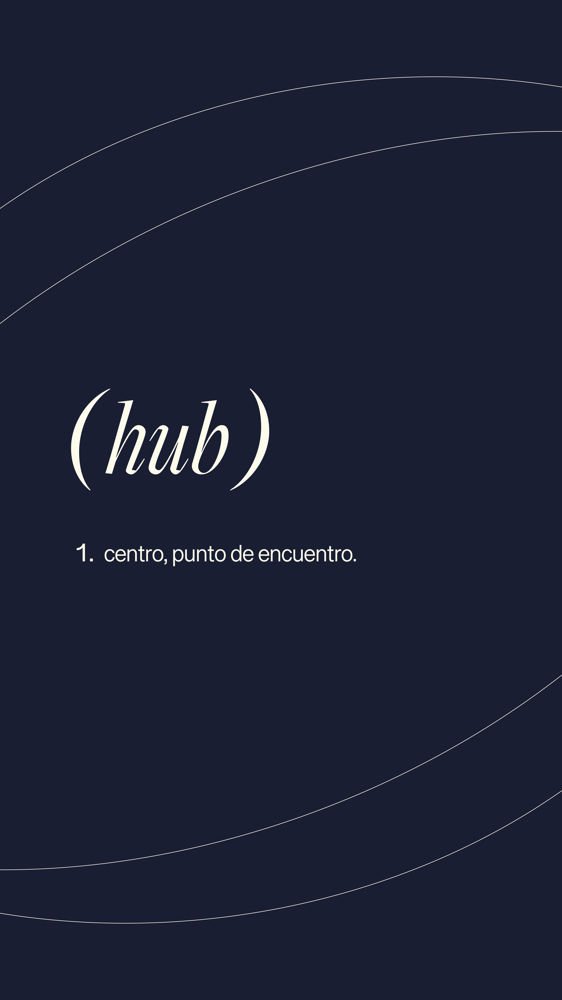

guía
guía para encontrar tu café favorito
criterios, tips y lugares que pasaron el filtro más exigente: el nuestro.
leer másname a better plan
los mejores lugares contados desde adentro. spoiler: no podés.

cafés · planes
algunos lugares no son solo un café. son el plan perfecto para cualquier momento del día — para trabajar, para ver a alguien que querés, o simplemente para estar. este es uno de esos.
leer artículoguía
criterios, tips y lugares que pasaron el filtro más exigente: el nuestro.
leer más
planes
esos lugares donde el tiempo pasa diferente y siempre querés quedarte un poco más.
leer más
reseña
porque hay brunches y hay brunches. este es de los que se recuerdan.
leer más
favoritos
los que nunca fallan, los que siempre recomiendo y los que ya son parte de la rutina.
leer más